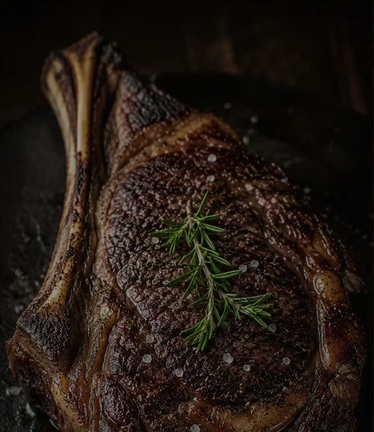
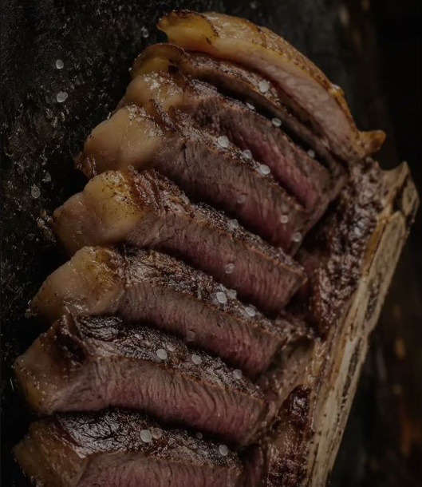
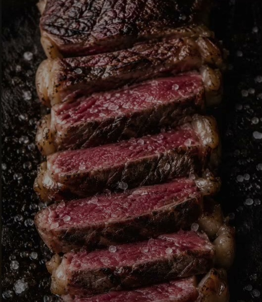
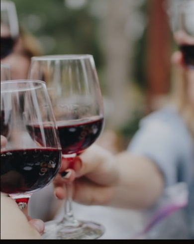

El arte ancestral del asador vasco, elevado a su máxima expresión.
Descubrir
Maduración 45 días · Buey Vasco

Maduración 30 días · Galicia

Maduración 60 días · Selección propia
La brasa de encina alcanza los 800°C en nuestro asador de piedra vasco. Sellamos, respetamos, esperamos. El tiempo no se negocia cuando se busca la perfección.
Trabajamos únicamente con ganaderos del País Vasco, Galicia y Navarra, con los que mantenemos relaciones de décadas. Conocemos el nombre de cada animal.

Más de 300 referencias cuidadosamente seleccionadas. Rioja Alavesa, Ribera del Duero, Txakoli de Getaria. El vino que merece cada corte.
Nuestro sumiller, con más de 15 años de experiencia, guía cada maridaje con el mismo respeto que ponemos en el fuego.
Calle Somera, 12
48005 Bilbao, País Vasco
Mar – Jue: 13:30–15:30 / 20:30–23:00
Vie – Sáb: 13:30–16:00 / 20:30–23:30
Domingo: 13:30–16:00
Lunes: Cerrado
+34 944 123 456
reservas@burdina.es